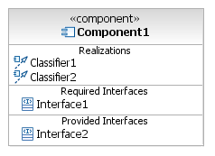
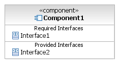
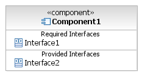

| Артефакт: Component Design |
 |
|
This artifact serves as an abstraction of the implementation and technology choices and is also used to the following:
|
| Основное описание | This artifact is a specification of the internal structure and behavior of one or more major structural elements (components) of a system. Each component realization describes the internal behaviors of a component that realize its interfaces. |
|---|---|
| Краткая схема | This artifact typically contains:
|
| Нотация | UML 2.0 provides the graphical notation and semantics for component design modeling. Key constructs and diagrams are briefly described below.
Component
Figure 1: Black Box Component Representations White-box component realizations can be represented a few ways depending on the complexity of the component or the amount of documentation required.
The simplest approach is to add a compartment stereotyped <<realizations>> to the black-box component and
list the classifiers that realize it.  Figure 2: White Box Component - Simple Representation Another approach shows each classifier with a dependency to the component it realizes.
Figure 3: White Box Component - Representation Showing Dependencies When a detailed view of component internals is required, place the component's classifiers inside of the black-box component rectangle. Ports specify a point of interaction between the component and its environment and between the component and its internal classifiers. Connectors map a port to the internal classifier that realizes the functionality. A connector is described by a solid line with a filled arrow from the port (a small square symbol) to the classifier.
Figure 4: White Box Component - Detailed Representation For white-box views of very complex components you can create a separate class diagram that links to its component. Note that components can be nested inside other components. Representing Static and Dynamic Aspects of a Component Class Diagram The static aspects of a component's internal design are described by UML class diagrams. The class diagram is a structural representation of objects and their static relationships described using the following structuring constructs:
Figure 5: Class Diagram Interaction Diagram
Figure 6: Collaboration Diagram
Figure 7: Sequence Diagram For more notation information, see Guideline: Component Design Modeling |
 



In circumstances where the design of a component involves applying well understood, existing strategies, it is possible that you will not need a new design. In those cases, you can simply refer to some existing design. Decide on the following:
|
| Последствия отсутствия | The absence of this artifact may result in:
|
|---|---|
| Причины для отказа | Reasons for not needing this artifact include:
|
| Опции представления | This artifact can be lightweight and informal, or substantial and formal according to the level of design that should be documented for the project. Possible representations include the following:
|
| Справочные таблицы | |
|---|---|
| Рекомендации | |
| Рекомендации по оценке |
Licensed Materials - Property of IBM |